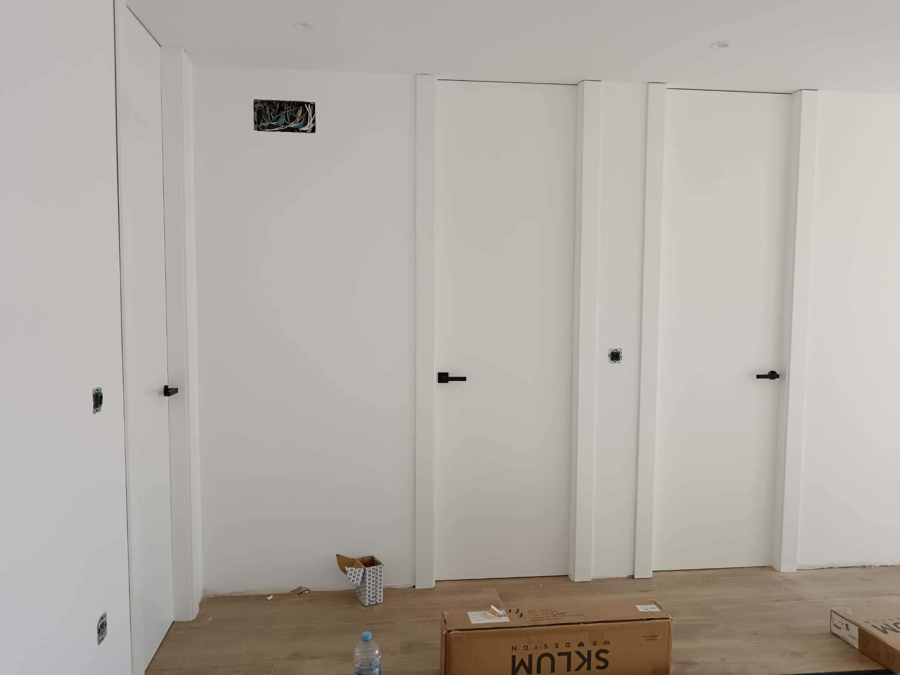
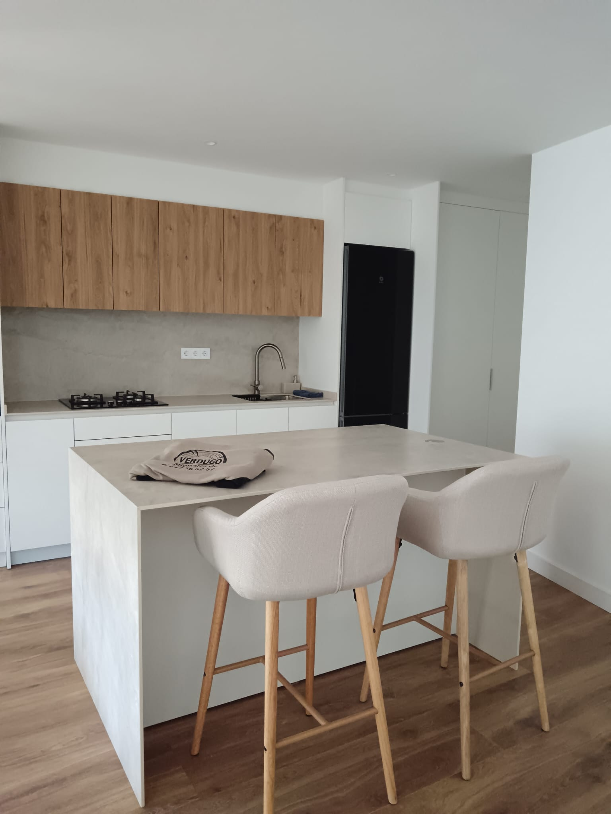

Algunos de nuestros trabajos

Puerta Minimalista Lacada
Diseño de líneas puras en blanco mate para maximizar la luminosidad y crear espacios diáfanos, con bisagras ocultas y cierre suave.

Acabado Nogal Oscuro
Realce de vetas naturales con barniz mate de poro abierto, combinado con herrajes en negro mate para un contraste elegante.

Cocina de madera
Integración perfecta con la pared para un efecto “flotante”, ideal en ambientes contemporáneos donde prima la continuidad visual.